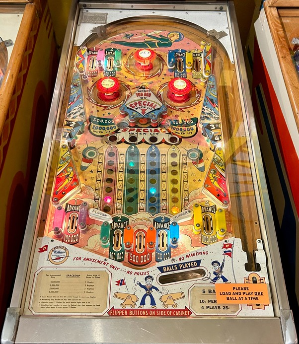

Not to be confused with the more well-known trilogy of space-themed games by Williams consisting of Space Mission/Space Odyssey (1976), Space Shuttle (1984), and Space Station (1987).
The main progression on Space Ship surrounds the four rockets which can be advanced up the columns near the flippers. Rocket 1 is purple, 2 is green, 3 is blue, and 4 is yellow. Each rocket can be advanced in three places: a top lane, an out lane, and one of the lower left or lower right standup targets. Advancing any rocket scores 100,000 points. Advancing any rocket at least 7 times maxes out that column, adding 1 Special to the award for draining down either of the two gobble holes near the center of the table. If all 4 rockets are completed, a single ball down a gobble hole can score 4 Specials, in addition to the hole's point value. If all 4 rockets have been advanced the same time number of times- including at the beginning of the game, when no rockets have been advanced at all- the center standup target between the gobble holes will score a Special instead of its usual 100,000 points. Special can only be set to give free games; it cannot award more points or additional balls.
Slingshots, the green rollover buttons near the slingshots, the top pop bumper labelled JET, and various side walls score 10,000 points. Intermittently based on 10,000 point switch hits, the two lower pop bumpers and both gobble holes will be lit. Lower pop bumpers score 10,000 or 100,000 when lit. Gobble holes score 500,000 or 1,000,000 when lit, in addition to 1 Special for each completed rocket.
There are 5 out lanes at the bottom of the playfield: one in the far left, three between the flippers separated by posts that can be used to nudge the ball back into play, and one in the far right. The center out lane of the three between the flippers is red and scores 500,000 points, but advances no rockets. The other four bottom lanes from left to right are purple, green, blue, and yellow, and each score 100,000 points plus one advance of their corresponding rocket. It is possible to drain underneath a raised flipper, which scores no points and advances no rockets.
There is no extra ball feature or end of ball bonus. Tilt ends game. Scores on this game are multiples of 10,000 points up to 8,990,000. Match is indicated by a star lighting up next to one of the lights in the 10,000s column on the right of the backglass when the game ends. The 100,000s and 1,000,000s digits of the score are depicted on the space station.
The below picture of Space Ship's playfield was taken from Pinside, where it is listed as image #3896476.
